Vespator Front Campaign: 500 Worlds - Phase 2

Click the map to open the full-size image in a new tab.
Theater icon legend is in the upper right. Infrastructure icon legend is in the lower right.
Scoreboard
| Alliance / Player | Faction | W | L | D | Points | Stronghold Intact | Support Facility | Staging Grounds | Fortification Line |
|---|---|---|---|---|---|---|---|---|---|
| Imperium | 1 | 3 | 0 | 29 | Yes | 1 | 3 | 1 | |
| Nick | Ultramarines | 1 | 1 | 0 | |||||
| Daniel | Dark Angels | 0 | 2 | 0 | |||||
| Chaos | 4 | 2 | 0 | 30 | Yes | 2 | 2 | 2 | |
| Ian | Daemons | 3 | 0 | 0 | |||||
| Jose | World Eaters | 1 | 2 | 0 | |||||
| Xenos | 2 | 2 | 0 | 29 | Yes | 1 | 0 | 3 | |
| David | Tyranids | 2 | 0 | 0 | |||||
| Kieran | Tyranids | 0 | 2 | 0 |
500 Worlds: War for the Vespator Front
In this narrative campaign, three Alliances are embroiled in war across the Vespator region of Ultramar.
There are no clean borders. Every Alliance has forces scattered across every world of the region, and it is a desperate scramble to secure control of individual Planets.
As a player, you will help make campaign decisions for your Alliance, control the movements and actions of an attack Fleet, and fight defensive battles when your Alliance is targeted on a Planet.
Fleets are an Alliance's attack pieces: They determine where attacks can be launched, but they are not themselves targeted or fought over. The target is an Alliance's Power Level on a Planet, which the Attacker seeks to lower. A defending Alliance will still fight battles on a Planet even if it has no nearby Fleet.
An Alliance's Campaign Point Total is the sum of its Power Level across all Planets, plus an additional 3 if its Stronghold is intact.
Your Alliance wins if, at the end of the sixth campaign Phase, it has more campaign points than the other Alliances. In the event of a tie, an Alliance whose Stronghold is still intact beats a tied rival whose Stronghold is not. If the campaign remains tied, victory is determined by battles.
Campaign Setup
At the start of the campaign, each Alliance will have to make decisions as a group. The game recommends setup strategies for each decision.
1. Initial Power Levels
Each Alliance secretly decides on the following:
- 1 Planet: Your Power Level on this Planet begins at 4. Your Stronghold is built here, taking up one of its Infrastructure slots, and you must defend it.
- 3 Planets: Your Power Level on each of these Planets begins at 3.
- 4 Planets: Your Power Level on each of these Planets begins at 2.
- All other 5 Planets: Your Power Level on each of these Planets begins at 1.
Everyone's decisions are revealed simultaneously, and the campaign map is updated. If more Alliances wish to build their Stronghold on a Planet than its Infrastructure locations can accommodate, one Alliance will be chosen at random and must make all their selections for this step again.
Official Guidance: Higher Power Levels on a Planet will often grant that Alliance some additional benefits in battles played at that Planet and will make it harder for foes to weaken the Alliance there. We recommend that each Alliance selects roughly 3 key areas on the campaign map to group their most powerful Planets around.
2. Initial Infrastructure
Each Alliance secretly decides on 3 pieces of non-Stronghold Infrastructure (Staging Grounds, Support Facility, or Fortification Line) they wish to build, and on which Planets they wish to build them. These pieces of Infrastructure will aid the Alliance in conquering the map.
Everyone's decisions are revealed simultaneously, and the campaign map is updated. For each Planet, if Alliances wish to build more pieces of Infrastructure on that Planet than its Infrastructure locations can accommodate, Alliances will be chosen at random and must choose a different Planet for that Infrastructure.
Official Guidance: We recommend placing Fortification Lines on Planets where your Alliance has a high Power Level, to help blunt enemy attacks, and Support Facilities or Staging Grounds near the parts of the campaign map where you wish to attack early on.
3. Initial Fleet Locations
Each Alliance secretly decides on 1 starting Planet for each of their Fleets.
Each player gets to choose where their own Fleet starts.
Everyone's decisions are revealed simultaneously, and the campaign map is updated.
Official Guidance: A player's Fleet location determines which Planets they can attack. We recommend placing your initial Fleets in areas of the campaign map that you wish to expand into in the first two Phases of the campaign.
- Alliances: Imperium, Chaos, Xenos
- Players: 2–3 per Alliance
- Fleets: 2 per Alliance; 1 per player
- campaign Length: 6 Phases
500 Worlds: War for the Vespator Front is a Warhammer 40,000 narrative campaign played over the course of several months to determine the fate of the Vespator Front region of Ultramar.
At the start of each Phase, every player privately submits the operations selected for their Fleets to Nick. Once all players have submitted, Nick announces the resulting map updates and the battles to be played for that Phase.
After the operations results for all players have been resolved, there will be randomly generated events and then players will have an additional opportunity to move their Fleets to connected Planets and to build Infrastructure.
Campaign Phase Structure
Each Phase of the campaign is divided into the following steps:
- 1. Select Operations
- 2. Perform Operations
- 3. Results and Events
- 4. Move Fleets
- 5. Build Infrastructure
The campaign rules for the War on the Vespator Front can be found here.
At the start of each Phase, every player privately submits the operations selected for their Fleets to Nick.
After the operations results for all players have been resolved, players will have an opportunity to move their Fleets to neighboring Planets.
Battle Operation (Attack Nearby Planet)
Battles must be fought for wars to be won and worlds to be claimed.
In the Resolve Battle Operations stage, each Alliance will select players from their Alliance to defend against the Battle Operations declared against them this campaign Phase. For each of those Battle Operations, a player from that Alliance can be selected to play a game of Warhammer 40,000 against the player whose Fleet declared it.
Each Battle Operation Attack Type has a bespoke mission that can be played, and a different set of campaign Outcomes that will change the situation on the campaign map. Alternatively, players can play a different mission from another Warhammer 40,000 publication, then apply the campaign Outcomes for the selected campaign Attack Type after that battle.
All operations rules below are previews; see the full rules for details.
Seize Power Base
The attacking Alliance attempts to take over pieces of Infrastructure that the opposing Alliance has constructed at the selected Planet, or to destroy them in order to raise their own over the ruins
Summary:
- Attacker goes first
- Defender sets up objectives
- Objective markers get auras depending on defending Infrastructure
- Objective markers provide deployment options to Defender
- Some Attacker units get Scouts 6"
- On Attacker win: Remove Defender Infrastructure and Attacker builds Infrastructure; if the Attacker Alliance has a Power Level of 3 or more at Planet, they build Infrastructure; add 1 to Attacker Alliance Power Level at Planet
- On Defender win: Defender builds Fortification Lines Infrastructure, unless their Power Level is 3 or more at Planet, in which case they can build Staging Grounds instead (their choice); add 1 to Defender Alliance Power Level at Planet
- On draw: Add 1 to the Attacker Alliance Power Level at Planet
Purge and Burn
The attacking Alliance attempts to reduce the Power Level of the opposing Alliance at the selected Planet by exterminating the foe and preventing them spreading elsewhere; this is particularly beneficial if the attacking Alliance has a higher Power Level
Summary:
- Defender goes first
- Defender places ambush markers, which cause mortal wounds to nearby units
- Attacker chooses some Defender units to take battle-shock tests and have reduced movement
- Attackers get victory points for destroying Defender units; Defenders get victory points for Defender units near Attacker battlefield edge
- On Attacker win: If Attacker Alliance Power Level is equal to or greater than Defender Alliance Power Level at Planet, reduce Defender Alliance Power Level at Planet by 1; add 1 to Attacker Alliance Power Level at Planet
- On Defender win: The Defender can reduce the Defender Alliance Power Level at Planet by any amount, and for each time they do they can add 1 to their Alliance Power Level at one nearby (1) Planet; add 1 to Defender Alliance Power Level at a nearby (1) Planet
- On draw: Add 1 to the Attacker Alliance Power Level at Planet
Orbital Invasion
The attacking Alliance attempts to reduce the Power Level of the opposing Alliance at the selected Planet by seizing a beachhead and pouring in reinforcements to hold off the surrounding foe; this is particularly beneficial if the attacking Alliance has a lower Power Level
Summary:
- Attacker sets up objectives
- Attacker deep strike units can set up closer to enemies (they can't charge on the same turn if they do)
- Attacker begins surrounded
- On Attacker win: If Attacker Alliance Power Level is less than Defender Alliance Power Level at Planet, subtract 1 from Defender Alliance Power Level at Planet; add 1 to Attacker Alliance Power Level at Planet
- On Defender win: Defender chooses a nearby (1) connected Planet, then: Defender removes any amount of Defender Infrastructure at battle Planet, and builds the same number and type of Infrastructure at connected Planet; Defender removes any amount of Defender Infrastructure at connected Planet, and builds the same number and type of Infrastructure at battle Planet; add 1 to Defender Alliance Power Level at battle Planet
- On draw: Add 1 to the Attacker Alliance Power Level at Planet
Planetary Bombardment
By weakening the Defender’s protection and making them vulnerable to a catastrophic bombardment, the attacking Alliance attempts to destroy the Planet’s Infrastructure locations, and potentially make the Planet uncontrollable
Summary:
- Attacker goes first
- Some Attacker units get infiltrators
- Defender has opportunity to increase Defender Alliance Power Level at Planet in-battle
- On Attacker win: Attacker chooses non-Stronghold Infrastructure slot at Planet, chance to destroy Infrastructure; add 1 to the Attacker Alliance Power Level at Planet
- On Defender win: Defender chooses one nearby (1) Planet, chance to destroy one or more Attacker Infrastructure there; add 1 to the Defender Alliance Power Level at Planet
- On draw: Add 1 to the Attacker Alliance Power Level at Planet
Supply Base Raid
The attacking Alliance attempts sabotage or theft at a key site such as a shipyard, transit hub, or way station. Their aim is to reduce the Defender’s ability to move resources and reinforcements to and from the Planet, reducing the Power Level of the opposing Alliance here or at connected Planets
Summary:
- Attacker goes first
- Objective markers potentially cause mortal wounds to nearby Defender units
- On Attacker win: Attacker selects nearby (1) Planet, with chance to reduce Defender Alliance Power Level at selected Planet; add 1 to Attacker Alliance Power Level at battle Planet
- On Defender win: Subtract 1 from Attacker Alliance Power Level at Planet, or at nearby (1) Planet if Defender Alliance Power Level at battle Planet is 3 or more; add 1 to Defender Alliance Power Level at Planet
- On draw: Add 1 to the Attacker Alliance Power Level at Planet
Boarding Action
The attacking Alliance strikes at an opposing Alliance’s Fleet stationed in orbit at an opposing Alliance’s Planet, aiming to cause enough destruction to force the defending Fleet to relocate to another system
If both the Attacker and Defender agree, this battle may be played out as a mission of Boarding Actions. Otherwise, play a normal game mode that both players agree upon.
Summary:
- On Attacker win: Attacker can select one Defender Alliance Fleet at Planet and move that Fleet up to two times; add 1 to the Attacker Alliance Power Level at Planet
- On Defender win: Attacker Fleet cannot move at the end of this Phase; Defender can select one Attacker Fleet at Planet and move that Fleet one time; add 1 to the Defender Alliance Power Level at Planet
- On draw: Add 1 to the Attacker Alliance Power Level at Planet
Void Leap Operation (Teleport Fleet)
Whether by risking the tides of the Warp, employing strange energy gates, or some other method of extended interstellar travel, Fleets and armies leap across vast gulfs of space.
Raise Edifices Operation (Build Infrastructure at Local Planet)
While armed forces stand guard on the ground and in the void, teeming masses toil to raise new strategically vital structures on captured worlds.
Logistical Auxilia Operation (Predict Future Theater of Nearby Battle)
Whether performing advanced augury and scouting missions, guarding supply lines from void piracy, or staging diversionary raids to overstretch enemy garrison forces, these assets fight not for their own glory, but instead to enable others.
Deploy Kill Teams Operation (Reduce Hostile Power on Nearby Planet; 33% chance per enemy Alliance)
Where massed formations risk being cut to pieces by superior enemy forces, elite kill team deployments can perform acts of sabotage and guerrilla raids to weaken the foe’s grip.
Infrastructure Overview
Armies without functional supply lines, void transport, and strategic coordination would soon perish in the fast-moving wars upon the Vespator Front.
There are four types of Infrastructure that can be built by players. When a player is allowed to build Infrastructure, the rules will describe which types are available to build.
If a Planet does not have any unoccupied Infrastructure locations left on it, players cannot build Infrastructure on that Planet.
When Infrastructure is destroyed, its ruins continue to occupy its Infrastructure location, and that destroyed location cannot be used or cleared to build more Infrastructure. Note that the Seize Power Base Operation Attack Type can remove enemy Infrastructure without destroying it.
When all of a Planet's Infrastructure locations are destroyed, the Power Level of every Alliance at that Planet is reduced to 0. Fleets can move to destroyed Planets, but can't select destroyed Planets for operations.
There is a maximum number of each type of Infrastructure that an Alliance can control on the board:
- Stronghold: 1
- Support Facility: 3
- Staging Grounds: 3
- Fortification Line: 5
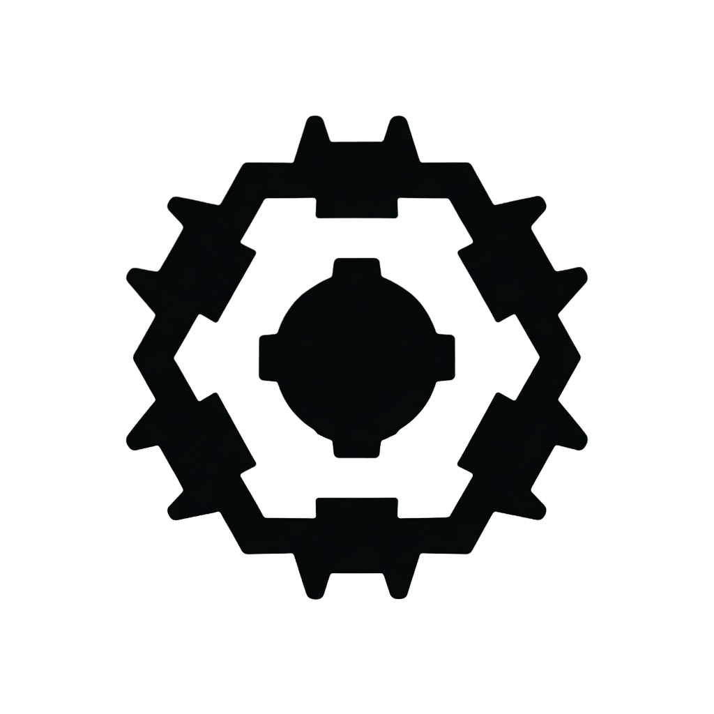
Stronghold
Every conquest must be commanded from a central position of greatest strength. Such Strongholds are the sleepless mind and beating heart both of an empire's ambitions of conquest.
Each time a player who is part of this Stronghold's Alliance wins a battle at this Planet or at a nearby (1) Planet, they can treat their Power Level at that Planet as 1 higher or lower than it actually is for the purposes of that battle's campaign outcome.
Official Guidance: While an Alliance's Stronghold remains undestroyed, it will also contribute 3 to its Alliance's Campaign Point Total. We recommend placing your Stronghold in a key area within a group of your most powerful Planets.
Staging Grounds
Be it forward operating bases, well-positioned Webway gates, rifts in the fabric of realspace, or hidden training grounds and marshaling sites, these locations allow commanders to rapidly deploy the right forces into rapidly evolving conflict zones.
Each time a player who is part of these Staging Grounds' Alliance fights a battle at this Planet or at a nearby (1) Planet, they can treat their Power Level at that Planet as 1 higher or lower than it actually is for the purposes of that battle's mission rules. The effects of multiple Staging Grounds are not cumulative.
Official Guidance: We recommend placing Staging Grounds near the parts of the campaign map where you wish to attack soon.
Support Facility
From promethium fuelling facilities and orbital docks to astropathic sanctums, biomass larders, shrines to the gods, or colossal translocation gates, these facilities provide battle groups with the means to swiftly cross interstellar gulfs.
For players who are part of this Support Facility's Alliance, Planets at a distance of 2 from it are now considered connected to it ("nearby"), but not vice versa.
Official Guidance: We recommend placing Support Facilities near the parts of the campaign map where you wish to attack soon.
Fortification Line
Some fortifications are unsubtle things: miles-long curtain walls, hulking scrap forts, or trench networks bristling with guns. Others are more subtle, be they webs of illusion, sorcerous snares, or layers of invisible force fields. All achieve the same purpose: to stymie the foe's advance.
The minimum Power Level of this Fortification Line's Alliance at this Planet is increased by 1. When it's built, if it increases the minimum Power Level above its current Power Level, increase its Power Level accordingly.
Each time a rule would reduce the Power Level of the Fortification Line's Alliance at this Planet below the minimum, one of their Fortification Lines at this Planet is destroyed instead.
Official Guidance: We recommend placing Fortification Lines on Planets where your Alliance has a high Power Level, to help blunt enemy attacks.
Every Planet has 2—3 potential Theaters associated with it, identifiable on the campaign map by the symbols occupying the Planet's Theater slots.
When playing a game as part of this campaign (excluding potential games of Boarding Actions), in the relevant step of the mission sequence the Attacker will be able to select one of the Theaters from the Planet the battle is taking place on. That player then rolls one D6 to determine which of that Theater's twists will apply to the game.
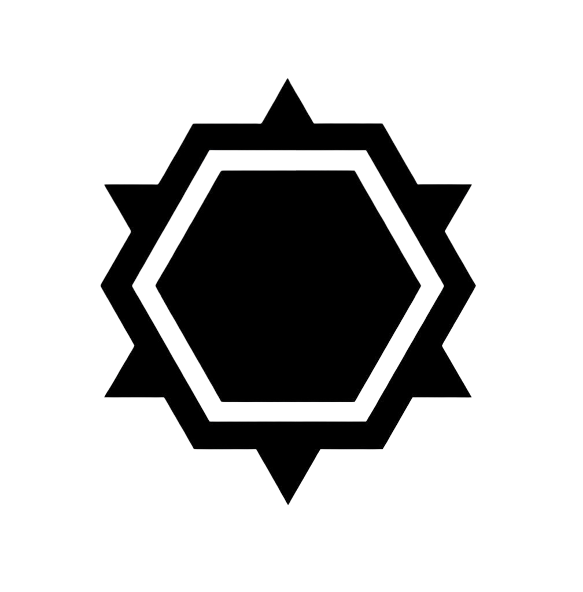
Spaceport
Packed with communication and coordination technologies, spaceports not only facilitate rapid force deployment, but are also prime strategic hubs.
Tactical Benefit: These twists make control of objective markers easier and provide improved reactive manoeuvrability, with units able to fall back and continue to operate effectively. It is suited to more elite armies that can take advantage of such rules to prevent their units from becoming bogged down and trapped by more numerous foes.
Recommended Terrain: For this Theater, we recommend using tall buildings and ruins as terrain features. These should be placed plentifully across the battlefield, but with gaps between them wide enough for larger vehicles and monsters to navigate. Some of these can be connected with barricades to represent cordons and barricades.
D6 Results
- 1-2 — Coordinate Lock: At the end of the Command Phase, for each objective marker the player whose turn it is controls, that objective marker remains under their control until their opponent's Level of Control over that objective marker is greater than theirs at the end of a Phase.
- 3-4 — Vid-feed Network: Each time a unit from a player's army Falls Back, they can select one of the following: until the end of the turn, that unit is eligible to shoot in a turn in which it fell back; or, until the end of the turn, that unit is eligible to declare a charge in a turn in which it fell back.
- 5-6 — Embarkation Shrines: At the end of each player's turn, their opponent can select one unit from their own army that is within range of one or more objective markers and not within engagement range of one or more enemy units. If they do, that unit is removed from the battlefield and placed into strategic reserves.
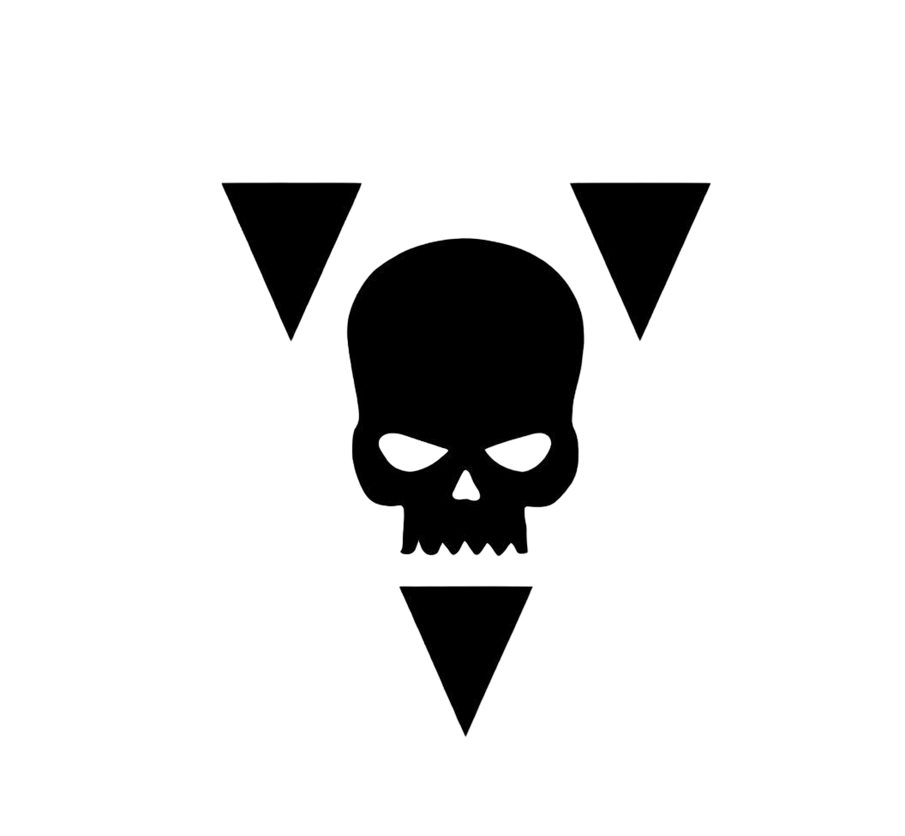
Desolate Wastes
Whether polluted wastelands, endless ferrocrete expanses, or dry grassland, these wind-scoured regions are open, largely empty, and often easily traversed.
Tactical Benefit: These twists are particularly suited to skirmishing forces largely comprising infantry and mounted units, enabling them to deploy more aggressively and reposition themselves later in the game.
Recommended Terrain: For this Theater, we recommend using lots of area terrain features with a smaller footprint, to represent nomad camps and scattered outcroppings. These can be scattered through no man’s land to indicate a largely uninhabited wilderness region.
D6 Results
- 1-2 — Open Ground: Players can re-roll advance and charge rolls made for units from their army (excluding monsters and vehicles).
- 3-4 — Eye of Judgement: At the end of the Declare Battle Formations step, starting with the Attacker, each player selects up to two units from their army (excluding monsters and vehicles). Models in those units have the Scouts 6" ability.
- 5-6 — Exposed Combatants: Ranged weapons equipped by models (excluding monsters and vehicles) have the Assault ability.
Xenoflora Jungle
From temperate forest to seething jungle, regions overrun with alien undergrowth present a close and hazardous environment in which to do battle.
Tactical Benefit: These twists provide a boost to melee-orientated armies, contributing improved damage dealing, protection from overwatch and punishment of units that fall back.
Recommended Terrain: For this Theater, we recommend using a mixture of woods and ruins to represent a largely forested region dotted with the remains of overgrown structures. There should be a large number of such terrain features scattered fairly equally across the battlefield, to reflect the sheer density of the area’s flora.
D6 Results
- 1-2 — Slaughter Spores: Improve the Strength characteristic of melee weapons equipped by models by 1.
- 3-4 — Green Hell: Units cannot use the Fire Overwatch stratagem.
- 5-6 — Predatory Plantlife: Each time a unit (excluding monsters and vehicles) falls back, all models in that unit must take a Desperate Escape test. When doing so, if that unit is battle-shocked, subtract 1 from each of those tests.
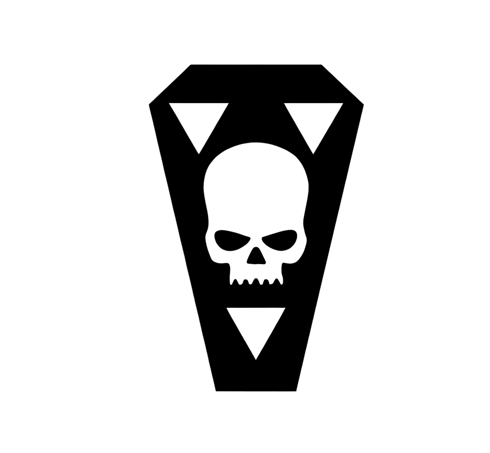
Rad Zone
Rendered extremely hazardous by the impact of a rad warhead during the ongoing wars of reclamation, irradiated ash carpets this region as thickly as dense snowfall.
Tactical Benefit: These twists cause significant disruption to communications and attempts to launch immediate attacks on the enemy, reducing lethality and improving the durability of units. It is suited to armies that favour a more attritional style of play.
Recommended Terrain: For this Theater, we recommend using tall hills to limit visibility. Ruins and buildings should not be placed on these hills, to represent clusters of hardened structures huddled in the more sheltered lowlands of this hostile Theater.
D6 Results
- 1-2 — Toxic Ash Storm: In battle round 2, each unit can only be the target of a ranged attack if the attacking model is within 18". In battle round 3, each unit can only be the target of a ranged attack if the attacking model is within 12". In battle round 4, each unit can only be the target of a ranged attack if the attacking model is within 18".
- 3-4 — Rad Malaise: Each time a model makes a melee attack that targets an enemy unit, if that enemy unit made a charge move this turn, add 1 to the hit roll.
- 5-6 — Esoteric Interference: Outside of the 1CP players gain at the start of the Command Phase, players cannot gain additional CP, regardless of the source.
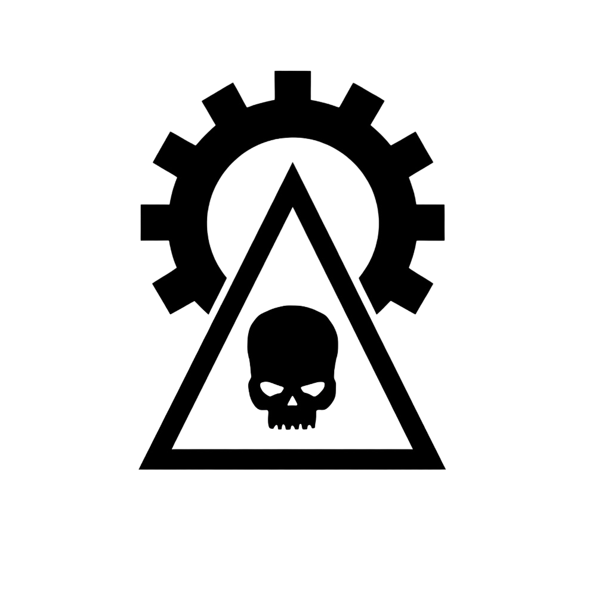
Forge Complex
Adeptus Mechanicus forge complexes can sprawl across entire continents, and do not stop their labours even should battle rage between their thundering machines and over their rivers of acid runoff.
Tactical Benefit: These twists predominantly aid tough, durable units; those that are more numerous and lightly armoured will take increased damage as a result of the volatile gases, ferocious heat, and hostile elements present in such locations.
Recommended Terrain: For this Theater, we recommend using lots of obstacle terrain features and industrial pipes and machinery to represent the still-operational forge shrines and manufacturing lines of the complex.
D6 Results
- 1-2 — Thermic Corrosion: Each time a model makes an attack that targets an enemy unit (excluding monsters and vehicles) within 9", improve the Armour Penetration characteristic of that attack by 1.
- 3-4 — Plasmic Venting: At the start of the battle round, if the plasmic venting has not occurred, the Attacker rolls one D6: on a result equal to or less than the current battle round number, the plasmic venting occurs. When the steam vents rupture, roll one D6 for each unit not within range of one or more objective markers: if the result is equal to or greater than the Toughness characteristic of that unit, until the end of the battle round, that unit is pinned. While a unit is pinned, subtract 2" from its Move characteristic and subtract 2 from charge rolls made for it.
- 5-6 — Volatile Combustibles: Each time players determine how many attacks are made with a Blast weapon, add an additional 1 to the result.
Hab Sprawl
Many of the worlds designated part of Greater Ultramar are heavily settled, boasting hive cities and mile upon mile of hab blocks. When battle comes to such Theaters it swiftly becomes a grinding city fight.
Tactical Benefit: These twists provide a boost to units within area terrain features, increasing their survivability or lethality. As such, this Theater is well suited to armies with large amounts of infantry that can take advantage of such terrain.
Recommended Terrain: For this Theater, we recommend a dense coverage of area terrain features, predominantly comprising ruins, placed evenly across the battlefield.
D6 Results
- 1-2 — Rolling Fumes: While a model is wholly within an area terrain feature, that model has the Stealth ability.
- 3-4 — Firing Positions: While a unit is wholly within an area terrain feature, that unit can be targeted with the Fire Overwatch Stratagem for 0CP, and when doing so, hits are scored on unmodified hit rolls of 5+ while resolving that stratagem.
- 5-6 — Into the Depths: At the end of each player's turn, their opponent can select one unit from their own army that is wholly within an area terrain feature and not within engagement range of one or more enemy units. If they do, that unit is removed from the battlefield and placed into strategic reserves.
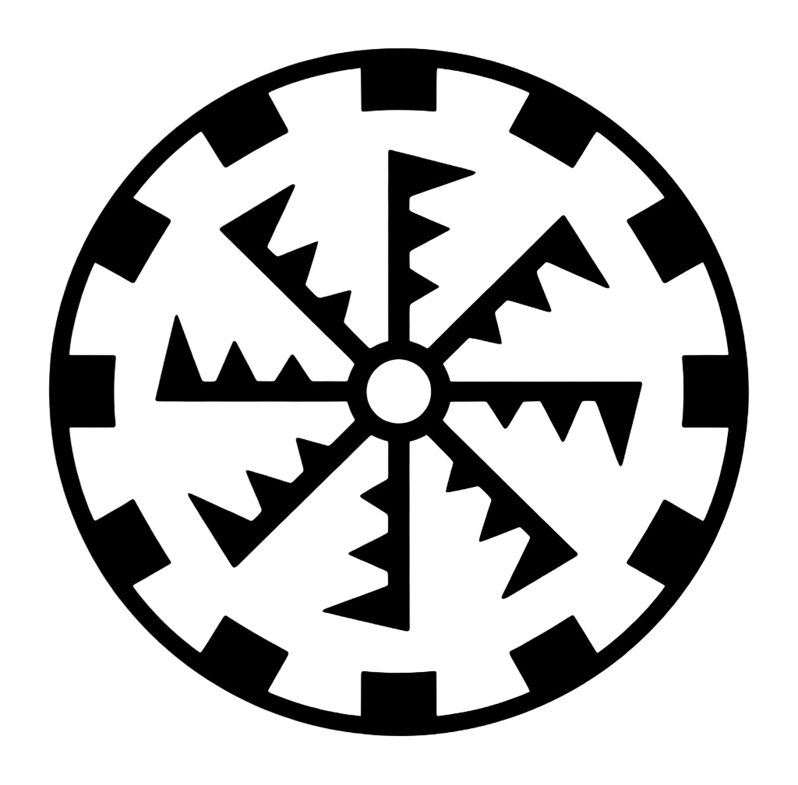
Delvesite Facility
Whether clashing in the flicker-lit depths of a mining delvesite or doing battle on the surface between pit heads and massed machinery, this is a hazardous Theater for any force to fight in.
Tactical Benefit: These twists primarily benefit attacks against tougher units, with scavenged explosives and jury-rigged mining machinery helping weaker models bring down imposing adversaries.
Recommended Terrain: For this Theater, we recommend using a good number of fuel pipes, containers, barrels, and barricades as well as Sector Fronteris structures to reflect mining Infrastructure and rugged mine buildings. Some of these should be placed within each player's deployment zone, as well as in No Man's Land, to represent an interconnected network of this apparatus.
D6 Results
- 1-2 — Sanctified Charges: At the start of the battle round, each player secretly selects and makes a note of one objective marker wholly within No Man's Land. For each player, once per battle, when an enemy unit ends a normal, advance or fall back move within range of their selected objective marker, that player can reveal that they selected that objective marker. If they do, roll one D6: on a 2+, that enemy unit suffers D6+1 mortal wounds.
- 3-4 — Crumbling Bedrock: Each time a model in a player's army makes a ranged attack that targets an enemy unit within 12", that player can ignore any or all modifiers to the following: the attack's Ballistic Skill, the hit roll, the wound roll.
- 5-6 — Tectonic Shock: Each time an attack targets a unit within range of one or more objective markers within No Man's Land, that attack has the Lethal Hits ability.
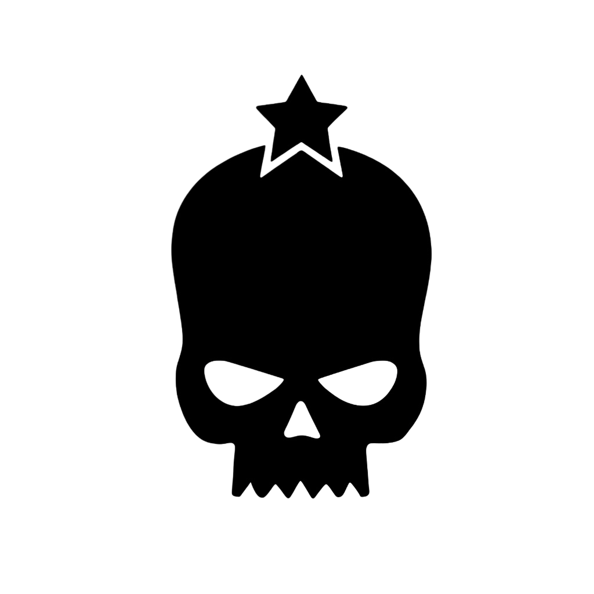
Dead Lands
Be they regions reduced to lifeless desert by harsh stars, zones poisoned by heavy industry, or the blasted result of long-ago orbital bombardments, these bleak Theaters often play host to clashes of heavy armour as they afford plentiful room for massed manoeuvres.
Tactical Benefit: These twists primarily benefit monster and vehicle units, providing them with increased speed, durability and lethality.
Recommended Terrain: For this Theater, we recommend clustering some area terrain features together, with wider gaps between them to allow for increased monster and vehicle manoeuvrability, and to represent the intermittent outcroppings of settlements and geological features that cling on amidst the desolation.
D6 Results
- 1-2 — Bleak Expanse: Add 3" to the Move characteristic of monster and vehicle units.
- 3-4 — Rocky Outcroppings: Each time a monster or vehicle unit remains stationary, until the end of the turn, each time a model in that unit makes a ranged attack, re-roll a hit roll of 1.
- 5-6 — Shroud of Dust: Each time a monster or vehicle unit from a player's army makes an advance move, until the start of that player's next turn, models in that unit have the Stealth ability.
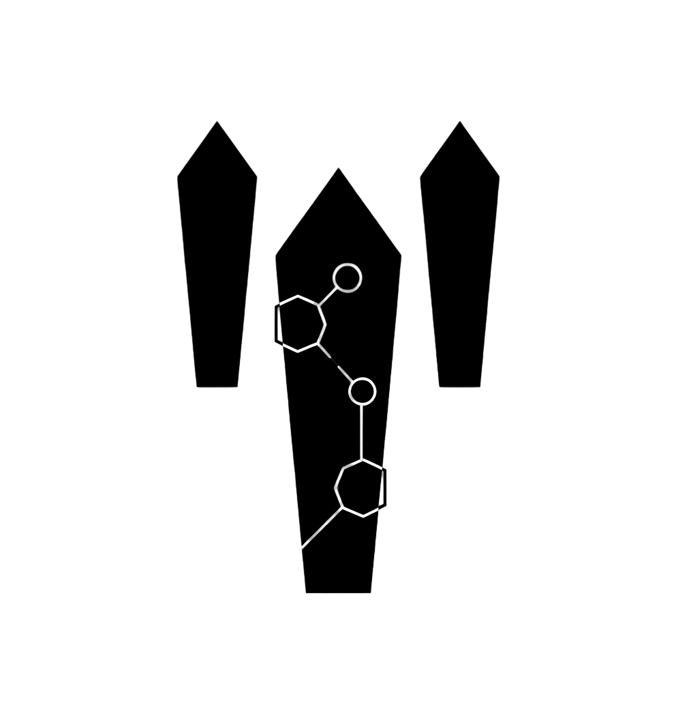
Tomb Complex
Necron tombs lurk beneath the surface of many worlds that Guilliman wishes claimed for his empire. As they wake, their eldritch structures rumble up from below to unleash terrible destruction.
Tactical Benefit: These twists are somewhat unpredictable. They do not necessarily suit any one particular army style, but can make for varied and interesting battles for those brave enough to use them.
Recommended Terrain: For this Theater, we recommend that players use their imagination to create the kind of terrain layout that best fits their own narrative. Tomb complexes can be hidden below any other sort of landscape, although we do recommend mixing in a few esoteric pieces of terrain to represent the Necron architecture that has risen from below or Phased into existence.
D6 Results
- 1-2 — Space-time Compression: Add 2 to advance rolls.
- 3-4 — Overpowering Energies: Each time a unit is selected to shoot or fight, it can use this rule. If it does, until the end of the Phase, add 2 to the Strength characteristic of weapons equipped by models in that unit and those weapons have the Hazardous ability.
- 5-6 — Quantum Shielding: Models have a 5+ invulnerable save against ranged attacks.
As the campaign progresses, additional events will be introduced into the campaign to maintain an exciting narrative. Some of these can happen in any Phase of the campaign, but others will only take effect if one Alliance begins to pull too far ahead or fall too far behind.
When the Warmaster (Nick) is called upon to generate any Vespator Front Events, he'll do the following:
- First, if one Alliance is more than 5 campaign points ahead of each of the others, that Alliance is said to be the Dominating Alliance, and the WM rolls one D6: On a 4+, the WM generates one Perils of Power event to take effect.
- Then, if one Alliance is more than 5 campaign points behind each of the others, that Alliance is said to be the Trailing Alliance and the WM rolls one D6: On a 4+, the WM generates one Desperate Measures event to take effect.
- Finally, the WM rolls one D6, adding 1 to the result if it is the fourth campaign Phase or later: On a 4+, the WM generates one Fortunes of War event to take effect.
D33: Fortunes of War
11: Lull in the Fighting
Starting with the Alliance with the highest Point Total and proceeding in descending order:
- That Alliance can build one of the following pieces of Infrastructure on a Planet: Fortification Line; Support Facility; Staging Grounds.
- That Alliance can move each of its Fleets to one connected Planet.
12: Void Piracy
In the next campaign Phase:
- Fleets cannot declare the Void Leap operation.
- The Support Facility Infrastructure rules do not take effect.
13: Tides of War
Starting with the Alliance with the highest Point Total, and proceeding in descending order:
- That Alliance can, if its Stronghold is not destroyed, remove it from the campaign map and then build a Stronghold on another Planet.
21: Sinister Omens
In the next campaign Phase:
- Fleets cannot declare the Logistical Auxilia operation.
- Each time a Planet is attacked, the Theater used is selected randomly, instead of by the player from the attacking Alliance.
22: Archeotech Riches
The WM selects the three Planets with the lowest total combined Power Level of all Alliances:
- At the end of the Process Battle Results step of the next campaign Phase, for each of those Planets, the Alliance that won the most battles at that Planet during that campaign Phase has secured archeotech riches. Each time an Alliance secures archeotech riches at a Planet, they can do the following up to three times: select that Planet or one nearby (1) to it, and increase their Power Level at that Planet by 1.
23: Starvation and Disease
Subtract 1 from each Alliance’s Power Level at every Planet.
31: Xeno Beast Migration
Players in each Alliance must secretly select new Planets for their Fleets to be placed at. When doing so, each Fleet’s new location must be different to the Planet it was previously at and not nearby (1) to that Planet. The WM then updates the campaign map accordingly.
32: Machinations of Fate
Each player can secretly notify the WM that they wish to defect to another Alliance, and if so, which Alliance they wish to defect to.
If one or more players wish to do so, the WM should try to move all players around so that each should end up with Fleets for their desired Alliance. If this is not possible then some players may not be able to defect and the WM will randomly decide which players can defect. Any unclaimed Fleets are then assigned amongst the remaining players of the relevant Alliances.
33: Stellar Storms
This event cannot take effect more than once during the campaign. If this event has already taken effect, generate a new Fortunes of War Event instead.
The WM rolls one D6 for each Planet with only one undestroyed Infrastructure location: On a 4+, that Infrastructure location is destroyed (note this can cause the Planet to be destroyed).
D3: Perils of Power
1: Cult Uprisings
The WM selects one of the Planets that the Dominating Alliance has its highest Power Level at, excluding one with their Stronghold on, to be the site of the uprising, then does the following:
- First, for each piece of Infrastructure at that Planet, roll one D6: On a 3-5, that piece of Infrastructure is destroyed (without destroying the location); on a 6, that piece of Infrastructure is destroyed and its Infrastructure location is destroyed (note this can cause the Planet to be destroyed).
- Then, for each Power Level of the dominating Alliance at that Planet, roll one D6, subtracting 1 from the result if there is a Fleet from that Alliance at that Planet: For each 4+, subtract 1 from that Alliance’s Power Level at that Planet.
2: Coordinated Opposition
In the next campaign Phase, each time a player fights a battle on a Planet against the Dominating Alliance, they can treat their Alliance’s Power Level at that Planet as 1 higher or lower than it actually is for the purposes of that battle’s mission rules and campaign outcomes.
3: An Open Tome
In the next campaign Phase, in the Select Operations step, the players of the Dominating Alliance must declare all of their Fleets’ campaign operations, and reveal them to the players of the other Alliances before those players declare their own Fleets’ campaign operations.
D3: Desperate Measures
1: A Costly Bargain
The Trailing Alliance can select one Planet (excluding any with one or more opposing Strongholds present), and one opposing Alliance. Those two Alliances switch their Power Level at that Planet with one another.
2: Defiant Zeal
In the next campaign Phase, each of the Trailing Alliance’s Fleets can declare one additional campaign operation.
3: Smuggled Assets
For each piece of Infrastructure the Trailing Alliance has on the campaign map, they can remove one piece of Infrastructure of that type from the map. Each time they do, they can build one piece of that type of Infrastructure on another Planet. They can then build one additional piece of Infrastructure (excluding a Stronghold) on any Planet.
Photos
Gallery of campaign photos, battlefields, painted armies, and map updates.
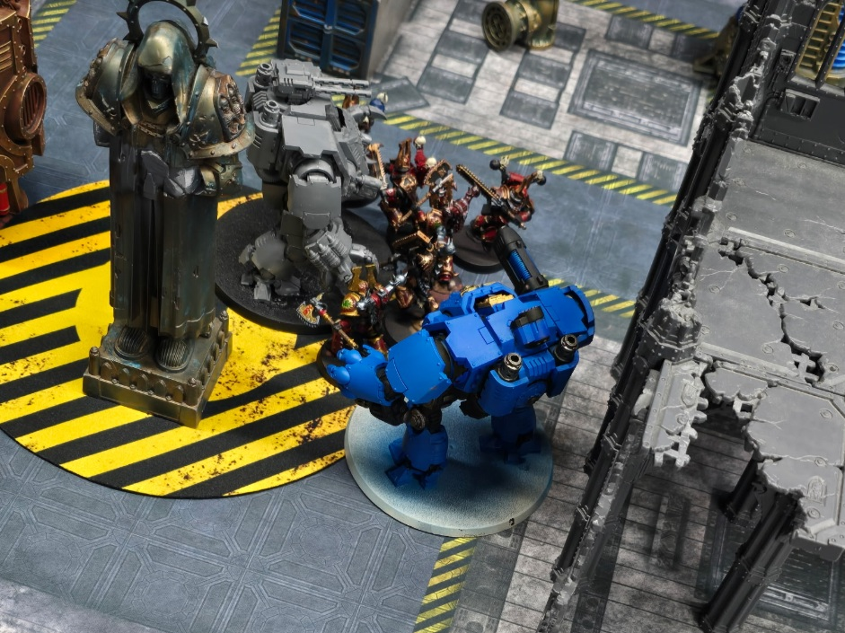
Ultramarines and World Eaters clash in a bombed-out delvesite facility on Noralus.
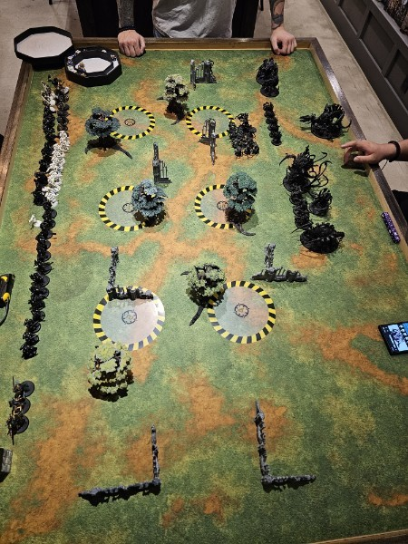
Dark Angels and Tyranids meet in the steaming xenoflaura jungles of Caltus Novem.
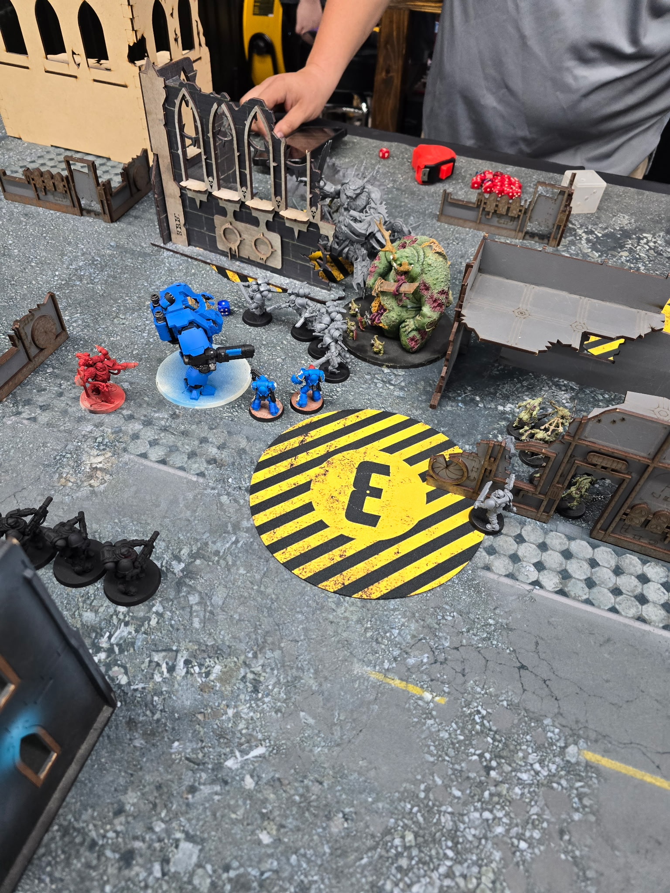
Ultramarines and Daemons fighting amidst the crumbling ruins of a forge complex on Karabas.
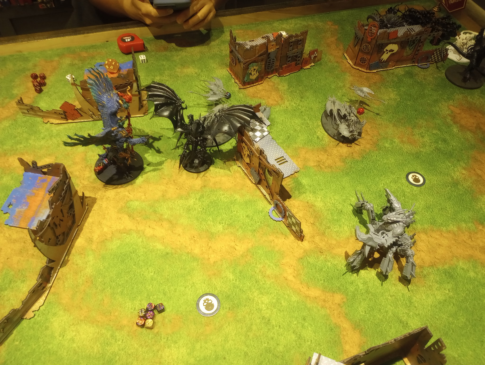
Daemons overwhelm the Tyranid position on Kryndaer.
Campaign Log
Click headers to sort.
| Fleet ID | Alliance | Player | Phase | Start Planet | Operation | Op Subtype | Op Planet | Op Target | Op Defender | Op Results | Free Move | Alliance Build | Finish Planet |
|---|---|---|---|---|---|---|---|---|---|---|---|---|---|
| 001-NICK | Imperium | Nick | 1 | Kryndaer | Battle | Attack: Seize Power Base | Karabas | Chaos | Ian | Loss | Caltus Novem | Staging Grounds at Vilkus Decima | Caltus Novem |
| 002-DANIEL | Imperium | Daniel | 1 | Kryndaer | Battle | Attack: Supply Base Raid | Caltus Novem | Xenos | David | Loss | Caltus Novem | Staging Grounds at Vilkus Decima | Caltus Novem |
| 003-IAN | Chaos | Ian | 1 | Kryndaer | Battle | Attack: Seize Power Base | Kryndaer | Xenos | Kieran | Victory | - | Staging Grounds at Vilkus Decima | Kryndaer |
| 004-JOSE | Chaos | Jose | 1 | Noralus | Battle | Attack: Seize Power Base | Noralus | Imperium | Nick | Loss | Kryndaer | Staging Grounds at Vilkus Decima | Kryndaer |
| 005-DAVID | Xenos | David | 1 | Kryndaer | Raise Edifice | Build: Support Facility | Kryndaer | Self: Xenos | - | Build | - | - | Kryndaer |
| 006-KIERAN | Xenos | Kieran | 1 | Noralus | Raise Edifice | Build: Fortification Line | Noralus | Self: Xenos | -- | Build | Kryndaer | - | Kryndaer |
| Phase 1 Campaign Event: Tides of War. Each alliance declines opportunity to move strongholds. | |||||||||||||
| 001-NICK | Imperium | Nick | 2 | Caltus Novem | Battle | Attack: Purge and Burn | Marvinius | Chaos | Jose | ||||
| 002-DANIEL | Imperium | Daniel | 2 | Caltus Novem | Battle | Attack: Orbital Invasion | Vilkus Decima | Chaos | Ian | Loss | |||
| 003-IAN | Chaos | Ian | 2 | Kryndaer | Logistical Auxilia | - | Kryndaer | - | - | - | |||
| 004-JOSE | Chaos | Jose | 2 | Kryndaer | Battle | Attack: Seize Power Base | Kryndaer | Xenos | Kieran | Victory | |||
| 005-DAVID | Xenos | David | 2 | Kryndaer | Battle | Attack: Supply Base Raid | Karabas | Chaos | Jose | Victory | |||
| 006-KIERAN | Xenos | Kieran | 2 | Kryndaer | Battle | Attack: Seize Power Base | Kryndaer | Chaos | Ian | ||||
| Phase 2 Campaign Event: [Placeholder Event Name]. [Placeholder event text.] | |||||||||||||